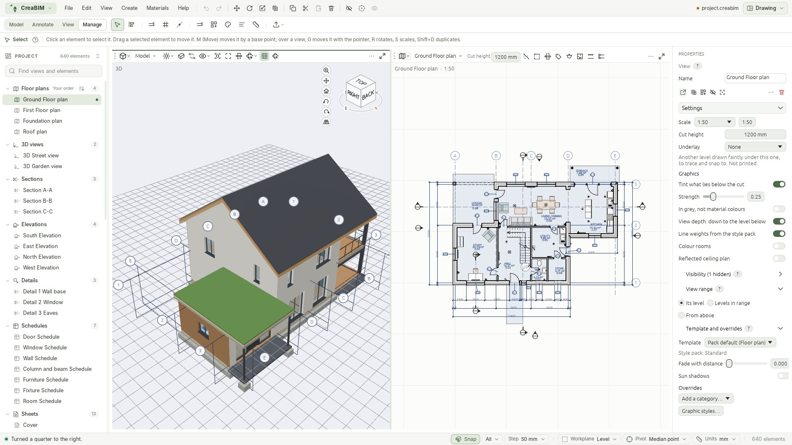
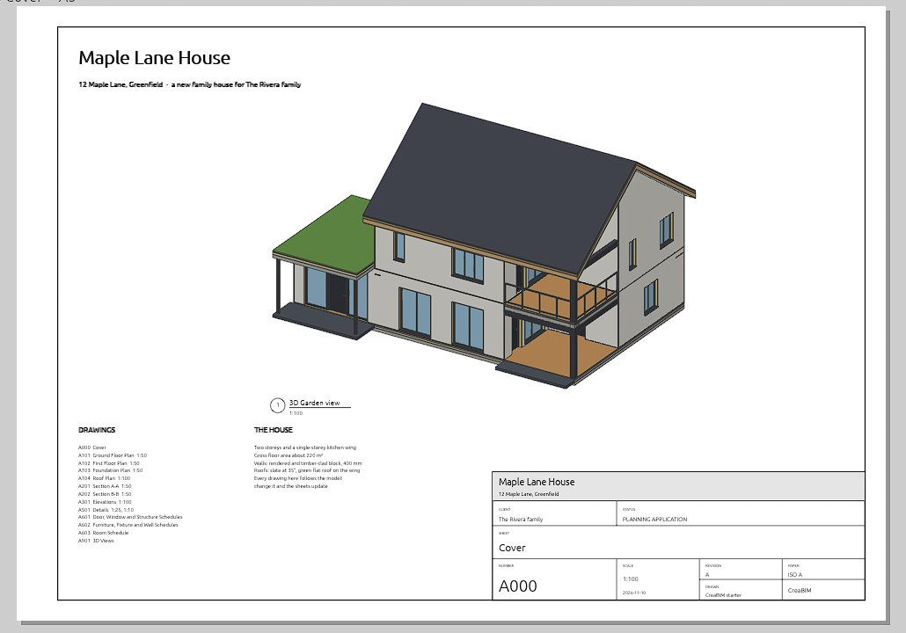
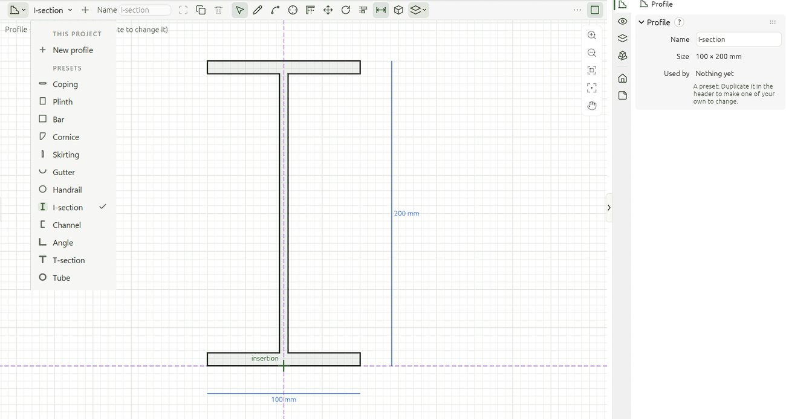

Everything follows from one model.
What CreaBIM does today, what each part is for, and the guide page that shows you how. The same pages are inside the app: press F1 over any tool.

Build it the way it is built.
Real building elements that know what they are, drawn with snaps and guides in any view: plan, section, elevation or 3D.
- WallsLayered assemblies, location lines, clean L, T and cross joins, flip in or out.Read the guide →
- Doors and windowsThey cut their own holes, flip hand and swing, and tag themselves.Read the guide →
- Slabs and roofsFrom an outline or picked walls, with holes, slopes and arcs.Read the guide →
- Columns, beams and footingsStructure on grids and levels, with your own profiles.Read the guide →
- Stairs and railingsStraight runs and landings, with railings that follow.Read the guide →
- Curtain wallsGrids of panels and mullions on a wall's path.Read the guide →
- Rooms and ceilingsRooms with areas and tags; ceilings from the room outline.Read the guide →
- Masses and sketchesFreeform volumes for concept work, extruded from a sketch.Read the guide →
- Furniture, fixtures and siteCatalogue objects that sit against walls, and the ground around the building.Read the guide →
- Types and materialsChange a type once and every element of it follows.Read the guide →
- ProfilesDraw a coping, gutter or steel section once in the Profile view; sweeps, columns, beams and railings use it.Read the guide →
- DivideCut a wall, beam or part into even parts, add guides at the divisions, or copy something into each.Read the guide →
Edit like a modeller.
Blender-style keys for move, rotate and scale, typed values for exact work, and an Edit mode for points, edges and faces.
- Move, rotate, scalePress the key, move the pointer, type a value.Read the guide →
- Edit modePick points, edges or faces; push and pull a face.Read the guide →
- Align and handlesAlign to any edge; drag grips in 2D and handles in 3D.Read the guide →
- Snaps and guidesEndpoints, midpoints, intersections and dashed guide lines.Read the guide →
- SelectingClick, box select, select all of a type, isolate with /.Read the guide →
- Undo, alwaysEvery change, in every view, is one undo step.Read the guide →
- View areas and workspacesSplit the window like Blender: plan, section, sheet and 3D side by side, saved as your own layouts.Read the guide →
- Properties in tabsThe element, the view and the project, each a tab; several elements edited at once.Read the guide →
Small, fast, and quiet.
Written in Rust and drawn on your graphics card. Sections and 3D drawings build on every core in the background; left alone, the app uses next to no CPU.
- 16MBThe Windows installer
- 0.2sFrom double-click to a window
- 0.3%CPU when you leave it alone
- 0accountsNo sign-in, no cloud, no telemetry
Measured with the starter house on a 16-core Windows desktop.
Drawings you can submit.
Plans, sections and elevations are read from the model, with cut lines, hidden lines removed and the annotation an architect expects.
- Plans, sections and elevationsLive views, at any scale, cut where you draw them.Read the guide →
- View range and graphic stylesCut height, depth, line weights and hatches by category.Read the guide →
- Dimensions, tags and marksDimension chains, door, window and room tags, level and section marks.Read the guide →
- DetailsCallouts with their own crop and scale.Read the guide →
- SheetsTitle blocks, scales and live views, rulers and guides, exported as vector PDF.Read the guide →
- Revisions and key plansRevision clouds with their table, and a key plan over the title block.Read the guide →
- Notes and the notepadNotes with Markdown on drawings, and a project notepad of to-dos that never prints.Read the guide →
- Number formatsHow dimensions, levels, tags and schedules write their numbers, kept with the style pack.Read the guide →
- Schedules and take-offDoor, window and room schedules; quantities by material, to CSV and XLSX.Read the guide →
Open formats, both ways.
Your project is an open, documented file. Other tools read what CreaBIM writes, and CreaBIM reads theirs.
- IFCRead IFC2X3, IFC4 and IFC4X3; write IFC4, with a choice of how walls, slabs and roofs go out, and IFC5 (alpha).Read the guide →
- BlenderglTF / GLB out to Blender, and a Blender import.Read the guide →
- FreeCADWrite a FreeCAD document.Read the guide →
- DXF and SVGDXF in as a reference to trace over; plans out as SVG.Read the guide →
- Trace a referenceA picture, a DXF or another view under the one you draw in.Read the guide →
- The project filePlain, open JSON with a published schema.Read the guide →


Ready to explore, not yet for production.
CreaBIM covers the whole path from model to sheets and IFC. Some parts are young, and we say which.
Works today
- Walls, slabs, roofs, columns, beams, footings, doors and windows
- Plans, sections, elevations, sheets and schedules from one model
- Quantities and take-off
- IFC4 in and out; glTF and FreeCAD exchange
Still young
- IFC export of some elements
- Blender import and export
- DXF (lines only)
- Stairs (basic shapes)
The full list is in Known gaps on GitHub.